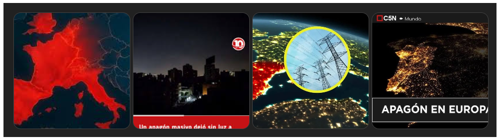

Apagón Masivo Sacude Europa: El 'Cero Energético' que Dejó Sin Luz a España y Portugal 🌍⚡
🔍 Análisis del evento del 28 de Abril de 2025: sus causas, impacto y lecciones aprendidas. 📊
🗓️ Fecha de publicación: 28 de Abril, 2025
📑 Fuente de investigación: Google AI Studio y Notebook LM 📡
¿Qué Sucedió? El Incidente del 'Cero Energético'

El lunes, 28 de abril de 2025, un corte de suministro eléctrico sin precedentes, denominado 'cero energético' por los operadores, afectó a toda la península Ibérica (España y Portugal) y a partes significativas de Francia. Se reportaron también afectaciones breves en Italia y potencialmente en otros países europeos como Alemania y Andorra. Las islas Baleares y Canarias, sin embargo, no parecieron verse afectadas directamente por este evento.
El apagón se inició cerca de las 12:30 p.m. hora local española (11:33 a.m. en Portugal), sumiendo a millones de personas en la oscuridad y generando un caos generalizado. Las autoridades confirmaron rápidamente la magnitud del incidente.

Las consecuencias inmediatas fueron severas: paralización del transporte público (metro, trenes), grandes atascos por semáforos inoperativos, retrasos en vuelos y la interrupción de comunicaciones esenciales.

Investigando las Causas: ¿Fallo Técnico o Ciberataque?

La causa exacta del apagón masivo sigue bajo investigación, aunque las hipótesis principales apuntan a:
- ✅ Fallo Técnico en la Red Española: Red Eléctrica de España (REE), el operador del sistema, informó que el incidente se debió a una "oscilación muy fuerte del flujo de potencia de redes, de origen desconocido". Esto provocó la desconexión (o "islanding") del sistema eléctrico peninsular del resto de Europa. El primer ministro portugués también señaló que el origen probable estaba en España.
- ✅ Condiciones Extremas y Demanda: Se baraja la posibilidad de un fenómeno atmosférico inusual o variaciones extremas de temperatura, que incrementaron drásticamente la demanda energética, sumado a posibles fallos en la infraestructura por falta de mantenimiento o condiciones climáticas adversas (tormentas). Se reportó una caída abrupta de la demanda gestionada de unos 11.000 a 12.500 MW en el momento del incidente.
- ✅ Hipótesis de Ciberataque: Aunque inicialmente descartada por algunos funcionarios europeos, la posibilidad de un ciberataque coordinado a gran escala contra la red europea no se ha eliminado por completo. Organismos de ciberseguridad en España (INCIBE) y Portugal (CNCS), junto con servicios de inteligencia, están investigando esta vía.

El diario El País publicó gráficos interactivos mostrando la evolución de la demanda eléctrica, la frecuencia de la red y otros indicadores clave durante el apagón.
🔗 Ver gráficos en El País(Descripción basada en el artículo de El País)
La Comisión Europea colabora estrechamente con España y Portugal para esclarecer las causas y coordinar la respuesta, asegurando el cumplimiento de los protocolos europeos de restablecimiento del suministro.
La propia Red Eléctrica ha informado sobre las 13:30 que se ha "empezado a recuperar tensión por el norte y sur peninsular, clave para atender progresivamente el suministro de electricidad". Más de diez horas después, el presidente del Gobierno, Pedro Sánchez, anunciaba el restablecimiento de casi el 50% del suministro.


:format(jpg)/f.elconfidencial.com%2Foriginal%2F23e%2F3ea%2F00b%2F23e3ea00b4fd5d8a5c88929cc2d9dc5a.jpg)
Impacto Generalizado: Del Caos Urbano a la Economía


🚦 Transporte y Movilidad
- Caos vehicular por semáforos apagados.
- Interrupción total de servicios de Metro en Madrid, Lisboa y Oporto (con evacuaciones).
- Suspensión de todos los servicios de tren en España.
- Retrasos en aeropuertos, aunque operativos con sistemas de contingencia.
📱 Comunicaciones y Servicios
- Caídas masivas de Internet y datos móviles (incluyendo 5G).
- Dificultades en llamadas de emergencia.
- Fallos en sistemas domésticos (alarmas, electrodomésticos).
- Personas atrapadas en ascensores (más de 140 rescates en España).
🏥 Servicios Esenciales y Economía
- Hospitales operando con generadores de respaldo, aunque con saturación inicial.
- Cierre de comercios y negocios, con pérdidas económicas.
- Problemas con pagos con tarjeta (prioridad del efectivo).
- Suspensión de eventos (Mutua Madrid Open) y cierre de museos (Prado, Reina Sofía).
🏛️ Respuesta Gubernamental
- Reuniones de emergencia y activación de gabinetes de crisis.
- Activación de planes para restablecer el suministro por fases.
- Coordinación con operadores europeos (Francia apoyó con suministro).
- Llamadas a la calma y a minimizar desplazamientos.
El Proceso de Restablecimiento
Red Eléctrica (REE) activó inmediatamente los procedimientos para la reposición del servicio. Este es un proceso complejo que implica:
- Arranque de 'negro': Iniciar la generación eléctrica desde cero en centrales específicas capaces de hacerlo sin alimentación externa.
- Creación de 'islas': Energizar gradualmente pequeñas áreas de la red alrededor de estas centrales.
- Sincronización: Conectar estas 'islas' entre sí y, finalmente, reconectar el sistema peninsular con la red europea.
- Priorización: Dar prioridad a servicios esenciales (hospitales, infraestructuras críticas) durante la recuperación.

Madrid, España, durante el apagón del 28 de abril
El tiempo estimado inicial para la recuperación total se situó entre 6 y 10 horas. Horas después del inicio del apagón, ya se había recuperado cerca del 50% del suministro, comenzando por el norte y sur peninsular. La coordinación entre REE, el gobierno, y otros operadores europeos fue crucial.
Lecciones Aprendidas: Preparación y Resiliencia Energética
Este evento subraya la vulnerabilidad de nuestras sociedades ante fallos en la infraestructura eléctrica. Si bien las causas aún se investigan, la necesidad de preparación individual y colectiva es evidente.
☀️ La Oportunidad del Autoconsumo Solar
La dependencia de la red eléctrica centralizada queda patente en estos eventos. El autoconsumo solar, especialmente combinado con sistemas de almacenamiento (baterías), emerge como una solución clave para la resiliencia energética doméstica. Permite:
- Mantener funcionando electrodomésticos esenciales y sistemas de comunicación.
- Garantizar la seguridad (alarmas, iluminación).
- Reducir la factura eléctrica y la huella de carbono a largo plazo.

Apagón Europa 2025: España, Portugal y Francia a Oscuras
✅ Kit Básico de Emergencia
Además de soluciones energéticas, es vital tener un kit básico:
- 🥫 Alimentos no perecederos
- 💧 Agua embotellada
- 🔦 Linternas y pilas/baterías
- 🩹 Botiquín de primeros auxilios
- 💵 Dinero en efectivo
- 📝 Contactos de emergencia en papel
- 📻 Radio a pilas
Estar preparados no solo mitiga el impacto de un apagón, sino que fomenta una mayor conciencia sobre nuestro consumo y las alternativas energéticas sostenibles.
Panorama Actual del Sistema Eléctrico en Europa
🏢 Empresas y Operadores Clave
- ✅ Red Eléctrica de España (REE): Operador del sistema eléctrico español, gestiona más de 45.000 km de líneas de alta tensión y más de 700 subestaciones. Fuente
- ✅ Endesa: Empresa española propiedad en un 70% de la italiana Enel, opera en generación, distribución y comercialización de electricidad y gas natural. Fuente
- ✅ Iberdrola: Multinacional española líder en energías renovables, con presencia en Europa, América y Asia. Fuente
⚡ Tipos de Energía y Generación
🔄 Transporte y Conexiones Transfronterizas
- ✅ Interconexiones: España y Portugal están conectadas eléctricamente, pero la limitada conexión de España con el resto de Europa ha sido criticada por su vulnerabilidad. Fuente
📜 Regulaciones y Planes de Emergencia
- ✅ Plan de Preparación ante Riesgos (PPR): España activó este plan tras un apagón masivo en abril de 2025. Fuente
🚨 Eventos Recientes
{/* Texto justificado */}
El 28 de abril de 2025, un apagón masivo afectó a la península ibérica, dejando sin electricidad a gran parte de España y Portugal.
El incidente fue provocado por una oscilación extrema en el flujo de potencia en las redes, resultando en la desconexión del sistema
eléctrico peninsular del resto de Europa.
Leer más en El País →
Impacto Profundo: Consecuencias y Reflexiones
El apagón masivo del 28 de abril de 2025 es un recordatorio alarmante de nuestra dependencia tecnológica. Si bien estos eventos han ocurrido antes en regiones específicas, la magnitud y el alcance global de este incidente han dejado en evidencia cuán frágil es nuestro sistema interconectado. ⚡🌍
😨 Histeria Colectiva y Angustia Social
La incertidumbre ante un evento de gran magnitud genera miedo y ansiedad. La falta de información clara y coordinada por parte de las autoridades agrava la histeria colectiva. Las redes sociales, aunque útiles, también se convierten en caldo de cultivo para rumores y noticias falsas (fake news), aumentando el pánico y dificultando la gestión de la crisis. 📢💥
💔 Salud: Impacto en Grupos Vulnerables
Las personas con condiciones preexistentes como problemas cardíacos, hipertensión y dependencia de equipos médicos enfrentan riesgos elevados. Aunque los hospitales activaron sistemas de respaldo, la saturación inicial y la posibilidad de un apagón prolongado ponen en jaque la atención crítica. Sin acceso continuo a dispositivos médicos electrónicos, el colapso hospitalario es una amenaza real. 🚑⚠️
🚗 Transporte y Comunicación: Un Mundo Desconectado
La falta de electricidad afecta gravemente los sistemas de transporte: semáforos inactivos generando caos vehicular, colapso ferroviario y de metro, y suspensión o retraso de vuelos. Además, la caída de las redes de telecomunicaciones (internet, datos móviles) impide la coordinación efectiva entre ciudadanos, servicios de emergencia y autoridades. 🚉📴
📚 Educación y Niños: Un Futuro Detenido
Escuelas y universidades paralizan sus actividades, afectando el aprendizaje de millones de estudiantes. La interrupción del acceso a plataformas educativas online y recursos digitales deja a los estudiantes, especialmente a los niños habituados a la vida digital, desconectados del conocimiento. 🎒📴
💰 Impacto Económico: Caída Comercial y Pérdidas Millonarias
Un apagón de esta magnitud frena bruscamente la actividad económica. Empresas tecnológicas, bancos, comercios y la industria en general sufren pérdidas significativas. Los problemas con los pagos electrónicos paralizan transacciones, y la interrupción de servicios digitales esenciales genera una crisis que puede prolongarse más allá del restablecimiento del suministro. La caída en bolsa y la parálisis de industrias automatizadas son consecuencias inevitables. 📉🏢
Soluciones y Llamado a la Acción Urgente
El apagón del 28 de abril de 2025 no debe ser solo una noticia pasajera, sino un catalizador para un cambio profundo en la manera en que concebimos y gestionamos la energía y la tecnología a nivel global. Las soluciones deben ser implementadas con urgencia y visión a largo plazo: 🚀🔬
🔄 Diversificación y Descentralización Energética
Invertir masivamente en un mix energético robusto que incluya fuentes renovables (solar, eólica, geotérmica) [Fuentes 2, 62, 64-66, 71, 73] y energías alternativas, pero también manteniendo y modernizando fuentes estables de base. Fomentar la generación distribuida y las microrredes para reducir la dependencia de un único sistema centralizado. 🌞💨💧
🔒 Ciberseguridad Avanzada y Resiliente
Elevar drásticamente los estándares y la inversión en ciberseguridad para infraestructuras críticas. Desarrollar sistemas de defensa digital proactivos, con capacidad de detección temprana, respuesta rápida y recuperación ante incidentes, incluyendo la protección contra ataques basados en IA. 🛡️🔍
🏗️ Infraestructuras Híbridas y Modernizadas
Diseñar e implementar infraestructuras energéticas y de comunicaciones más resilientes, capaces de operar en modo degradado o aislado durante emergencias. Incorporar tecnologías modernas (smart grids) pero manteniendo sistemas analógicos o tradicionales de respaldo que no dependan exclusivamente de la conectividad digital. Invertir en el mantenimiento preventivo y la modernización de las redes existentes [Fuente 33, 65]. ⚙️🔋
📢 Conciencia Social, Preparación y Resiliencia Comunitaria
Educar a la población sobre los riesgos y cómo actuar responsablemente en casos de emergencia (tener kits básicos [Fuente 74], planes familiares, uso racional de recursos). Fomentar activamente el autoconsumo energético [Fuentes 51, 71-73] y las soluciones de almacenamiento a nivel doméstico y comunitario. Promover la resiliencia comunitaria y la cooperación vecinal. 🧑🏫🔦🏘️
Opiniones de Expertos y Análisis
El debate sobre las causas sigue abierto. Analistas de ciberseguridad consultados por diversos medios [Fuentes 9, 12, 16, 23-26] consideran "muy probable" o "no descartable" un ataque digital coordinado, dada la escala del evento. Otros expertos [Fuentes 20, 30, 33] apuntan a fallos técnicos en cascada, posiblemente exacerbados por la alta demanda energética debida a condiciones climáticas extremas y una posible falta de mantenimiento o modernización de la infraestructura. La investigación oficial conjunta entre España, Portugal y la UE será clave para determinar la causa raíz.
Video Análisis: ¿Ciberataque o Fallo Técnico?🔍 Más Información y Fuentes Adicionales
Para un seguimiento detallado del evento y análisis adicionales, consulta las siguientes fuentes oficiales y medios confiables:
- 📌 La Nación (Argentina): "¿El apagón en España se debe a un posible ciberataque?"
- 📌 RTVE (España): "Apagón masivo sin luz en España: se analizan las causas"
- 📺 La Nación TV (Video Análisis)
- 📌 El Español / Invertia: "El 'cero energético' que afectó a España"
- 📊 El País: "El brutal apagón con datos y gráficos en tiempo real"
- 📌 CNN en Español: "Apagón masivo afecta a España, Portugal y partes de Francia"
- 📌 Reuters / DF Sud: "Grandes zonas de España, Portugal y Francia sufren cortes de electricidad"
- 📌 EcoFlow Blog ES: "Apagón mundial 2025: ¿cómo prepararnos?"
- 📌 El Cronista: "Corte de luz masivo en toda España, Francia y Portugal: ¿Qué sucedió?"
- 📌 Infobae: "España, Francia y Portugal investigan el origen del apagón: ¿ciberataque?"
- 📸 N+: "Galería: Así se vive el apagón masivo en Europa"
- 📌 Mendoza Post: "Gran apagón en Europa: ¿fue un ciberataque?"
- 📌 JJ Producciones: "Gran apagón masivo afecta a España y Portugal en abril de 2025"
- 📌 Emol: "Unión Europea contradice tesis de ciberataque en apagón que sacude a Portugal y España"
- 📌 KienyKe: "¿El apagón en Europa fue producto de un ciberataque? Esto se sabe"